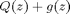
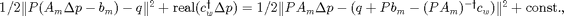
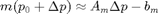
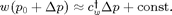

update_structure
Updates z by solving argmin Q(z) + g(z).
Contents
Description
Q(z) is described by matrix P and vector q, via Q(z) = 1/2 Pz - q ^2.
Typically, the optimal value for z is found by solving the problem in terms of its parameterization variable p. For this reason, the problem is typically converted into "p-space".
function [z, p] = update_structure(P, q, g, p0) switch(g.scheme)
Continuous case.
case 'continuous'
p = p0;
my_compressor = @(p) ...
(p <= g.p_range(:,1)) .* g.p_range(:,1) + ...
(p >= g.p_range(:,2)) .* g.p_range(:,2) + ...
((p > g.p_range(:,1)) & p < g.p_range(:,2)) .* p;
m = @(p) g.m(my_compressor(p));
w = @(p) g.w(my_compressor(p));
for k = 1 : 10
% Parameterize
[A, b] = my_parameterize(P, q, g, p);
dp = A' * (A*p - b);
f = @(p) 1/2 * norm(P * m(p) - q) + w(p);
delta_p = line_search_convex(f, grad, dp, p, err_thresh)
end
Continuous-linear case
case 'continuous-linear'
path(path, genpath(strrep(mfilename('fullpath'), ... 'update_structure', 'cvx'))); % Parameterize [A, b] = my_parameterize(P, q, g, p0); % Solve for p. cvx_quiet(true) cvx_begin variable dp(length(p0)) minimize norm(A*dp - b) subject to p0 + dp <= g.p_range(:,2) p0 + dp >= g.p_range(:,1) cvx_end p = p0 + dp; z = g.m(p); % % Test % real(A'*(A * dp - b)) % get_gradient(@(p) 1/2*norm(P*(g.m(p)) - q)^2 + g.w(p), p)'
Discrete case
case 'discrete'
while true % Parameterize [A, b] = my_parameterize(P, q, g, p0); % Try all "one-off" combinations of p. for k = 1 : length(p0) dp = zeros(size(p0)); for l = 1 : length(g.p_range(k, :)) dp(k) = g.p_range(k, l) - p0(k); res(k, l) = 1/2 * norm(A * dp - b).^2; end end % Find the optimal "one-off" change. [~, ind] = min(res(:)); [si, sj] = ind2sub(size(res), ind); p = p0; p(si) = g.p_range(si, sj); % Test for termination condition. if norm(A*p - b) < norm(A*p0- b) p0 = p; else break end end z = g.m(p);
Discrete-diagonal case
case 'discrete-diagonal' % Parameterize [A, b] = my_parameterize(P, q, g, p0); % Test if A is diagonal. A_diag = spdiags(spdiags(A, 0), 0, size(A,1), size(A,2)); if ~all(A == A_diag) warning('Matrix is not diagonal.'); end % Try all combinations of p. for k = 1 : size(g.p_range, 2) dp = g.p_range(:,k) - p0; res(:,k) = 1/2 * abs(A * dp - b).^2; end % Find the optimal values of the residual. [~, ind] = min(res, [], 2); for k = 1 : length(ind) p(k, 1) = g.p_range(k, ind(k)); end z = g.m(p); otherwise
error('Invalid scheme for structure design objective.'); end end % End update_structure function.
Private parameterization function.
We transform  into p-space via  where we have used the linearizations  and .
function [A, b] = my_parameterize(P, q, g, p0) % Linearization of m(p). A_m = get_gradient(g.m, p0); b_m = -g.m(p0); % Linearization of w(p). c_w = get_gradient(g.w, p0)'; % Transform into p-space. A = P * A_m; b = q + P * b_m - (A' \ c_w); end % End private function my_parameterize.